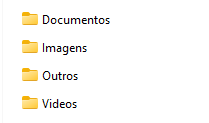

Projetos Relevantes

Conversor de Moedas Online
Aplicação web para conversão de moedas BRL/USD com interface amigável.
Tecnologias: HTML, CSS, JS, API de câmbio.
Ver no GitHub

Organizador de Arquivos em Python
Script automatizado para organização de arquivos por tipo, facilitando a gestão de pastas.
Tecnologias: Python.
Ver no GitHub